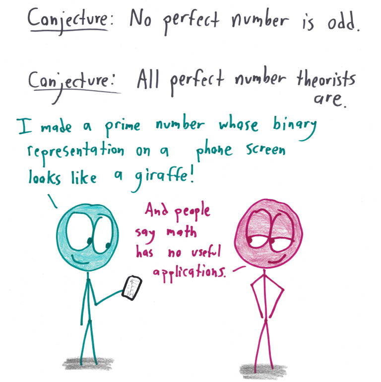

About
Where did the idea come from?
I was on Hacker News earlier this week and saw this comment:
“Does there exist a prime number whose representation on a phone screen looks like a giraffe?”https://t.co/YKklFj3MSp pic.twitter.com/8OJHhCu7Qh
— Quentin Zervaas (@qzervaas) January 20, 2018
If you follow the link, it will take you to a Reddit post, where a user /u/zhbrui was prompted to find such a prime by a joke in a web comic. First, I wanted to figure out a way to find such a prime for any given image, and then to build a web app that would do exactly that.
The original comic is by Ben Orlin.
How does it work?
The application is written in plain Java.
As for the math, first the image is converted to a series of 1s and 0s. Then, the first digit is sqitched to a 1 if it is not already, and then the last 32 bits are set to 0s. Then, numbers between the number and the number plus 2^32 are guess and tested for primality. Primality is checked using the Miller Rabin primality test. When a prime is found, the number is reported back to the user.
Specifically, let the number represented by the binary string after setting the initial bit to 1 and the final bits to 0 be defined as n.
Then we are looking for a number in the range {n,n+1,...,n+2^32-1}.
We know prime are pretty dense so we can just guess numbers in that range and test each on for primality. So a short Python program that would solve this would look like:
#!/usr/bin/python
import random
def prime_in_range(n1, n2):
ret = -1
max_guesses = get_max_guesses(n1, n2)
num_tries = 0
done = False
while not done:
guess = random.randrange(n1, n2)
if is_prime(guess):
ret = guess
done = True
else:
num_tries += 1
if num_tries >= max_guesses:
done = True
return ret
The reason for calculating a max_guesses is that it is possible no primes exist in the range.
However, if we want a 99 percent cussess rate, then we need to define the max number of guesses allowed.
Well, by the Prime Number Theorem, the "probability" of a large number n being prime is 1/ln n.
(Actually, the probability is either 1 or 0, but the function could more formally be said to be a measure of the density of primes in the neighborhood of the number.)
Then we note this function shrinks as n grows.
We make a conservative approximation of the function by assuming it is constant over the range [n1, n2] as the value 1/ln n2. Define this value as p.
The number of guesses needed then to find a prime in the range is then given by the value ln .99 / ln (1-p).
Say n2 = 2^4096, then the max number of guesses neeed is less than 30.
Thus there is plenty of space in a range of 2^32 to find a prime near a number less than 2^4064.
Addtionally, this number grows at a rate less than O(n).
This also gives us the source:
#!/usr/bin/python
import math
def get_max_guesses(n1, n2):
ret = -1
n = max(n1, n2)
p = 1 / math.log(n)
ret = math.log(0.99) / math.log(1-p)
ret *= 2
return ret
Finally, we have to figure out the function is_prime.
I use the Rabin Miller method, which I think Wikipedia does a good job explaining. The source would be something like:
#!/usr/bin/python
import random
def is_prime(n):
ret = True
max_guesses = 500
d = n-1
s = 0
done = False
while s % 2 == 0:
s /= 2
s += 1
count = 0
while count < max_guesses and ret:
a = random.randrange(n-1)
wit = pow(a, d, n)
if wit != 1: # find if wit is a witness to n
pow_iter = 0
done = (wit != n-1)
while not done:
if pow_iter == d - 1:
done = True
ret = False
else:
pow_iter += 1
wit = (wit**2)%n
count += 1
return ret
Basically this performs a check to find a "witness" that n is not prime.
The program is probabalistic, meaning that it can fail.
(This is why, when you view the results of the conversion, it says the number is probably prime.)
One can know with certainty, but that requires checking every prime less than 2*(ln n)^2.
In our case, for a number of size 2^4096, then one would need to check more than one million primes.
This is certainly tractable, but it is not great if someone is waiting for a page to load.
The python code above can be found here.